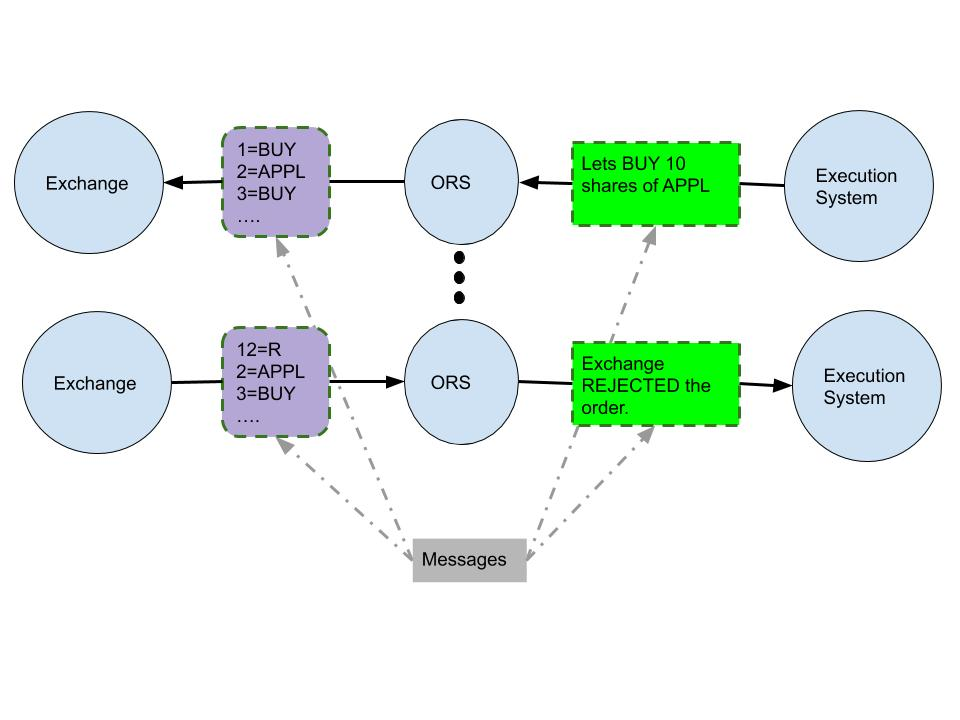

Trading Pipeline Overview
A typical trading pipeline has 3 major components. I had the fortune to work on all the three.
- Portfolio Management System: It runs every Nth day and decides what to buy/sell for each user.
- Execution System: It decides when and how to execute each order.
- Order Routing Server: Facilitates information flow between execution system and the exchange (broker, to be precise).
Portfolio Management System(PMS)
PMS allocates user’s money to multiple strategies by taking into account user’s appetite for risk. Some strategies are high-risk high-reward type, some are low-risk low-reward and the rest fall in between the two extremes. Each strategy constitutes of a methodology to manage money, and hyper parameter values controling the risk and other metrics. The methodology, built on lines of some traditional trading ideas like momentum, mean reversion, market neutral often employs machine learning techniques for prediction.
With the help of market simulators, strategies in PMS are tested on historical data.
Only best performing strategies are picked to be run in PMS for managing users’ money. PMS predicts the desired allocation to products for each user. Using currrent allocation and the prediction, orders are then generated and sent to Execution System for execution.
Execution System
As we have seen, PMS says something like “After looking at the prices of stocks and etfs of past few days, I, in my genius intelligence and ultimate authority, think that for the user ABC, we should buy n1 shares of APPL, sell n2 shares of VTI and so on and so forth”. It sends these orders to execution system.
For every order, execution system looks at price data at minisecond/microsecond granularity and decides upon the best
time in near future to execute the order. If it is a buy order, the system attempts to execute the order at the time
when the price is locally low. For a sell order, aim is naturally to sell at a locally higher price.
 aim is to Sell(Buy)")
Order Routing Server (ORS)
Exchange speaks a different language. Trading system speaks another. ORS is the interpreter which receives messages from one and translates it to the other. A buy order request, sell order request, order price modification request etc are some examples of messages which Trading system sends to Exchange. Order confirmation notification, order cancellation notification etc. are few examples of messages sent by the exchange.
